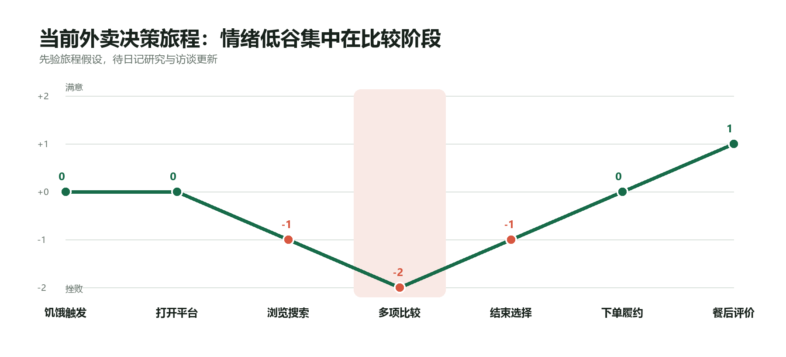
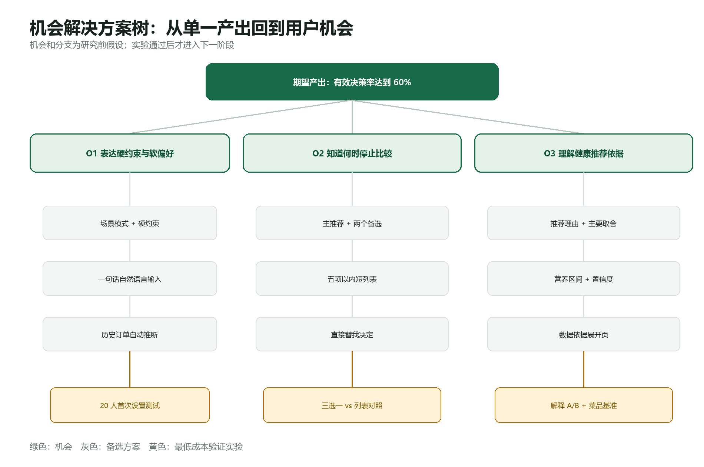
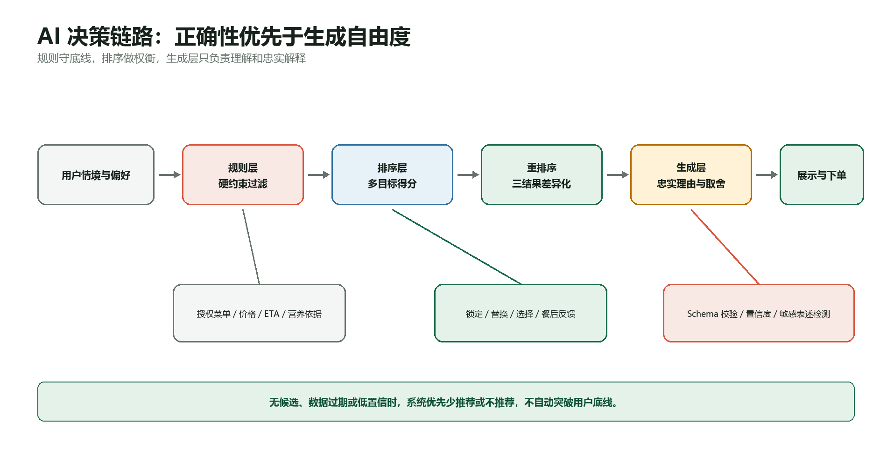
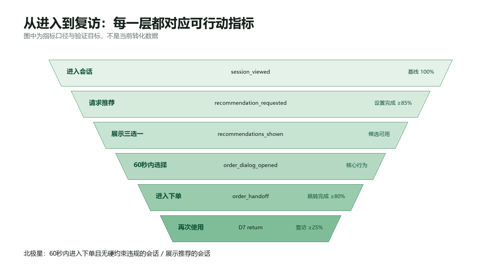
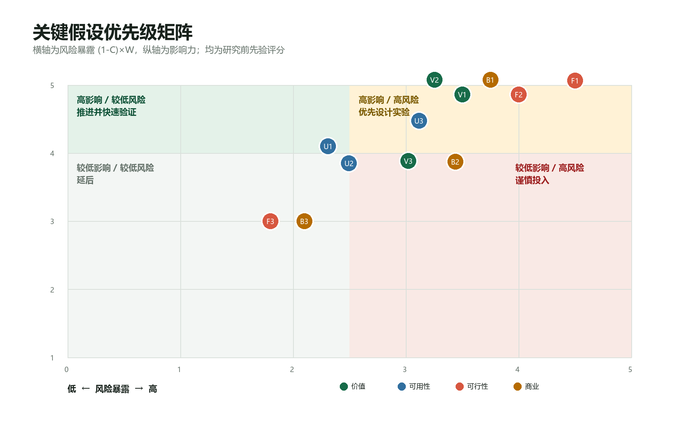

这顿
AI 外卖决策助手
不是再给用户一份更长的菜单，而是把复杂取舍压缩成 3 个满足底线、理由清晰、可继续下单的选择。
01 / 问题定义
用户不缺推荐，缺的是结束比较的机制
高频外卖用户需要同时处理预算、配送时间、口味、健康和营养。平台擅长展示供给，但最后的多目标权衡仍由用户完成。
从“今天吃什么”转向“在冲突条件下，怎样更快做出不后悔的决定”。

02 / 用户与 JTBD
先聚焦高频、强约束的当餐决策
当我饿了、时间有限却面对大量相似选项时，我想快速获得少量可信选择，以便不后悔地完成下单并继续学习或工作。
- 目标用户
- 18–26 岁、每周外卖至少 3 次的大学生与职场新人 [H]
- 高压场景
- 工作日午餐、预算明确、距离下一项任务不足 30 分钟 [H]
- 验证计划
- 20 人连续 7 天点餐日记，记录真实耗时、浏览和退出行为 [T]
03 / 机会与方案取舍
三选一不是界面偏好，而是核心价值假设
一个答案效率最高但控制感弱；五项短列表仍可能触发比较。当前用“主推荐 + 两个差异化备选”平衡效率与自主感，并把数量本身纳入对照实验。

预算、ETA、排除项先用规则过滤，候选为零时不自动突破。
只给三个承担不同角色的结果，不把长列表换一种形式搬回来。
通过锁定、单项替换和换一批，让用户能纠错而无需重新开始。
04 / 可交互 Demo
从表达底线到完成选择，核心链路已可运行
- 表达情境选择“赶时间”，设置 25 元、25 分钟、不吃辣。
- 规则过滤先移除违反预算、时限和排除项的候选。
- 三项决策查看最合意、时间更稳和营养更优，并理解主要取舍。
- 控制与反馈锁定、替换、模拟下单并提交餐后评价。
Demo 使用 30 道模拟菜单，不连接真实外卖平台，不会创建真实订单。
05 / AI 产品设计
AI 不控制用户底线，只处理规则难以解决的部分

总分 = 健康×权重 + 味道×权重 + 价格适配×权重 + 速度适配×权重 + 偏好修正 − 拒绝惩罚
低置信营养结果不得进入“营养更优”；解释生成失败时降级为确定性模板。
06 / 成功指标与验证
成功不是多一次点击，而是 60 秒内完成合规决策
60 秒内选择推荐并进入下单、且无硬约束违规的会话 ÷ 展示推荐的会话
原型验证目标 ≥60% [T]
20 人 7 天日记；≥60% 每周至少 3 次明显选择困难 [T]
100 家店字段完整率≥90%、深链成功≥95% [T]
40 人随机对照；中位决策时间下降≥30% [T]
150 道菜基准；硬约束违规率=0 [T]
07 / 风险与商业判断
最大风险不是模型，而是独立产品能否获得真实数据

收窄至工作日午餐等高压场景；仍低频则停止。
从独立小程序转为外卖平台内能力，不以抓取绕过授权。
评估平台合作或 B2B2C，不依靠补贴制造增长。
08 / 个人贡献
独立完成从问题推导到可测试原型的产品闭环
三视角创意、风险假设、JTBD、画像、旅程与 OST。
PRD、功能优先级、交互原型、多目标推荐逻辑与范围边界。
北极星、实验卡、19 类事件、验收场景和推荐逻辑测试。
规则/排序/生成分层、数据契约、置信度、安全与降级策略。
协作边界：这是个人项目，没有真实跨职能团队和平台合作；接口契约与验收标准用于展示协作准备度，不虚构推进经历。
09 / 产品反思
最强的是问题重构，最弱的是还没有真实证据
把“推荐什么”改写为“如何结束取舍”
这一判断改变了北极星、答案数量、安全边界和首版范围。
先做了较完整原型，再补研究
容易形成方案承诺；当前画像、痛点频率和价值仍需要真实行为验证。
先完成订单回放与 1/3/5 项低保真对照
同时在第零天验证授权数据路径，再决定独立入口还是平台内形态。
10 / 证据库